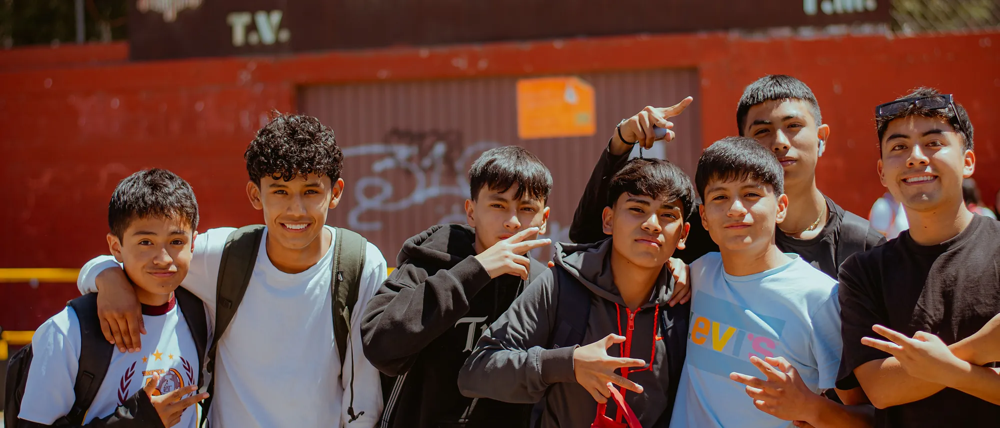
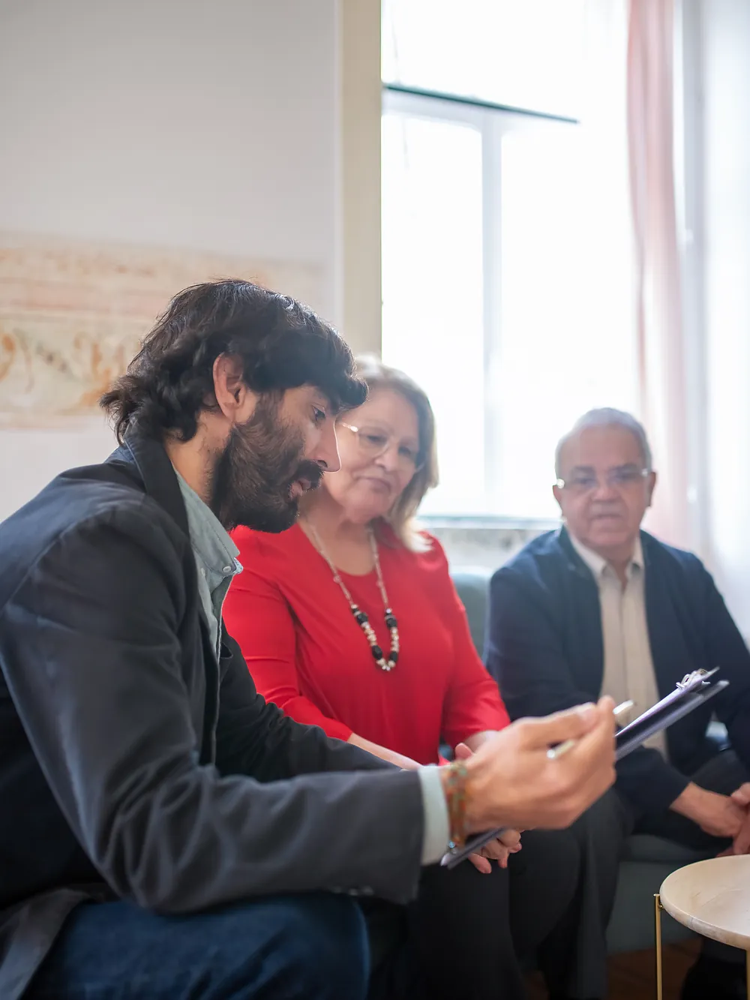
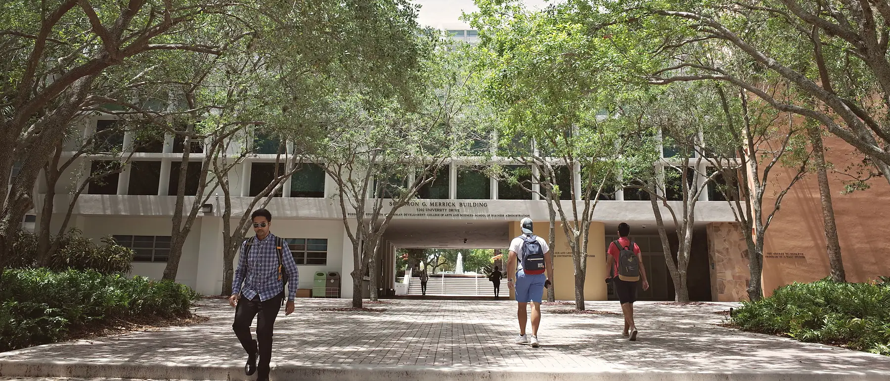
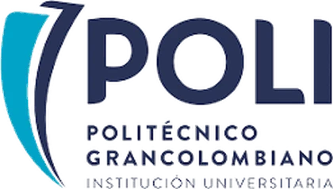
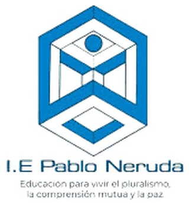
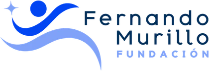

Fundación Red Conecta
Identificamos estudiantes de grado once en instituciones educativas públicas y gestionamos con universidades aliadas los beneficios que hacen viable su ingreso. El acompañamiento se mantiene hasta que culminan su formación profesional, y continúa en su tránsito al ejercicio laboral.

assets/fotos/apertura.jpg2400 × 1030 px · horizontal
assets/fotos/equipo.jpg1200 × 1600 px · verticalFundación Red Conecta acompaña de manera integral y continua a estudiantes con talento y limitadas oportunidades económicas en la construcción de su proyecto educativo y profesional.
Identificamos a los candidatos en instituciones de educación media pública, valoramos su perfil y su contexto, gestionamos con instituciones de educación superior los beneficios que hacen viable su ingreso, y sostenemos el acompañamiento académico y psicosocial durante toda su formación.
Valores
Acceso justo a oportunidades educativas y de desarrollo.
Reconocimiento del esfuerzo, la motivación y el potencial.
Presencia activa antes, durante y después del proceso educativo.
Trabajo en red con instituciones y aliados estratégicos.
Procesos claros, medibles y responsables.
Promover el acceso, la permanencia y la proyección educativa y laboral de estudiantes con talento y limitadas oportunidades económicas, mediante procesos de orientación vocacional, acompañamiento académico y psicosocial, mentoría, seguimiento y articulación de oportunidades, así como la gestión y el fortalecimiento de alianzas con instituciones educativas, universidades y entidades públicas y privadas, nacionales e internacionales.
La Fundación no imparte educación formal, educación no formal ni educación superior, y no otorga títulos, certificados académicos o credenciales educativas. Su actuación se limita a actividades de educación informal: orientación, acompañamiento, preparación, asesoría, mentoría y apoyo complementario a los procesos desarrollados por instituciones legalmente autorizadas.
Largo es el camino de la enseñanza por medio de teorías; breve y eficaz por medio de ejemplos.
Séneca · Epístolas morales a Lucilio
Establecemos alianzas con instituciones de educación media y de educación superior, y operamos una metodología por fases que articula a ambas en torno a un mismo estudiante.
Cada fase tiene objetivos definidos, instrumentos propios y criterios de decisión verificables. El detalle metodológico se comparte con las instituciones aliadas en el marco del convenio correspondiente.

assets/fotos/proceso.jpg2400 × 1030 px · horizontalAcompañamiento integral a estudiantes de grado once, sin costo para la institución.
Convenio institucional que define alcance, grupos participantes, cronograma, responsables y tratamiento de datos.
Alianzas formales orientadas a reducir la deserción estudiantil y a materializar, con resultados medibles, los compromisos de responsabilidad social.
Convenio que define el número y la naturaleza de los beneficios de acceso: becas, cupos priorizados, descuentos, exenciones o apoyos de bienestar. Los administra siempre la institución, conforme a sus políticas internas.
La deserción no se origina en la universidad. Se origina antes de la matrícula.
Las convocatorias de beca evalúan lo que cabe en un formulario: calificaciones, puntajes y clasificación socioeconómica. Esos datos no permiten anticipar si un estudiante logrará sostener su proceso, y ninguna oficina de admisiones cuenta con los medios para levantar los que sí lo predicen.
Para las instituciones que no requieren la alianza completa, los componentes del proceso se contratan por separado: el fortalecimiento de la selección de becarios, la orientación profesional en grado once, o el acompañamiento posterior a la matrícula.
Las condiciones se definen conjuntamente, según el alcance y el número de estudiantes.
La Fundación mantiene cuatro alianzas activas con instituciones de educación superior, instituciones de educación media y organizaciones que complementan el acompañamiento.

assets/logos/politecnico-grancolombianoSVG o PNG transparente
assets/logos/ie-pablo-nerudaSVG o PNG transparente
assets/logos/fundacion-fernando-murilloSVG o PNG transparenteRecibir, aprender, contribuir.
Todo estudiante beneficiario se vincula a la Fundación y realiza un aporte en especie de carácter formativo, definido según sus habilidades: monitorías académicas, diseño, comunicación, producción de recursos o soporte administrativo.
El propósito no es económico. Un estudiante que ingresa sin trayectoria previa suele graduarse años después con título académico y sin experiencia demostrable. El Círculo interviene sobre esa limitación desde el primer semestre: al culminar su formación, el beneficiario cuenta con entregables, referencias y una trayectoria verificable.
Los beneficiarios de cohortes anteriores participan como monitores y mentores de las siguientes, lo que consolida una comunidad de apoyo entre pares.
La contribución se formaliza en el Acuerdo de Vinculación y en un plan individual suscrito por las partes. Consiste en un aporte en especie de carácter formativo, como contrapartida a los beneficios de acceso gestionados con las instituciones aliadas. No constituye relación laboral, no genera salario ni prestaciones sociales, y no sustituye funciones propias del personal de la Fundación.
El plan individual establece una dedicación razonable frente a la carga académica del periodo, y se reduce, reprograma o suspende cuando las circunstancias académicas, de salud o personales del estudiante así lo requieran. La contribución no opera en ningún caso como sanción ni como contraprestación económica.
La renovación del beneficio de acceso depende de los compromisos académicos acordados con la institución de educación superior, y no del volumen de la contribución realizada.
Puedes acompañar el proceso de un estudiante desde su ingreso a la educación superior hasta su grado.
El beneficio de acceso resuelve la matrícula. Sostener una carrera exige además lo cotidiano: el transporte hasta el campus, la alimentación, los materiales, la conexión para estudiar en casa. Cuando eso falta, el estudiante no se retira por bajo rendimiento. Se retira aunque le esté yendo bien.
De tu aporte, la mayor parte se destina directamente al estudiante, según las necesidades identificadas en su proceso. Una parte menor sostiene la operación de la Fundación, y esa proporción se te informa al vincularte y se acredita en los reportes.
Esa parte no es un costo administrativo abstracto. Es lo que hace posible que el estudiante no esté solo: el acompañamiento psicológico cuando la presión aparece, las tutorías cuando una materia se complica, el seguimiento académico periodo a periodo, la relación sostenida con su familia. Nuestros estudiantes no necesitan únicamente recursos. Necesitan que alguien esté pendiente, y eso también hay que sostenerlo.
Recibirás información periódica sobre el avance de ese estudiante y sobre la ejecución de los recursos que aportaste.
La relación se administra en su totalidad a través de la Fundación. No se establece contacto directo entre quien apadrina y el estudiante sin autorización expresa del acudiente cuando se trate de menores de edad, y en ningún caso se comparten datos sensibles ni información que permita su identificación sin consentimiento previo.
Los aportes no se entregan en efectivo al estudiante ni a su familia. Se ejecutan mediante pagos directos a terceros o a la institución educativa, según las necesidades acreditadas en el plan de apoyo de cada beneficiario.
El apadrinamiento no otorga injerencia en la selección de beneficiarios, en las decisiones académicas del estudiante ni en la operación de la Fundación. Se pacta por periodos académicos y es renovable de común acuerdo.
Cada apadrinamiento se formaliza por escrito, con la destinación de los recursos, la proporción exacta que se dirige al estudiante y a la operación, la periodicidad de los reportes y las condiciones de terminación.
Registro de las actividades de orientación en las instituciones educativas, las visitas a las familias y el ingreso a la educación superior.
Si representas a una institución educativa interesada en una alianza, eres un estudiante que desea conocer el programa, o quieres apadrinar el proceso de un beneficiario, escríbenos.
fundacionredconecta@gmail.comRecolectamos y tratamos datos personales conforme a la Ley 1581 de 2012 y al Decreto 1377 de 2013. La participación de cualquier estudiante requiere consentimiento informado del acudiente, y la información individual se comparte con instituciones aliadas únicamente con autorización previa y bajo el principio de minimización de datos.
Para consultar, actualizar o suprimir tus datos, o para pedir copia de nuestra política de tratamiento de la información, escríbenos a fundacionredconecta@gmail.com.